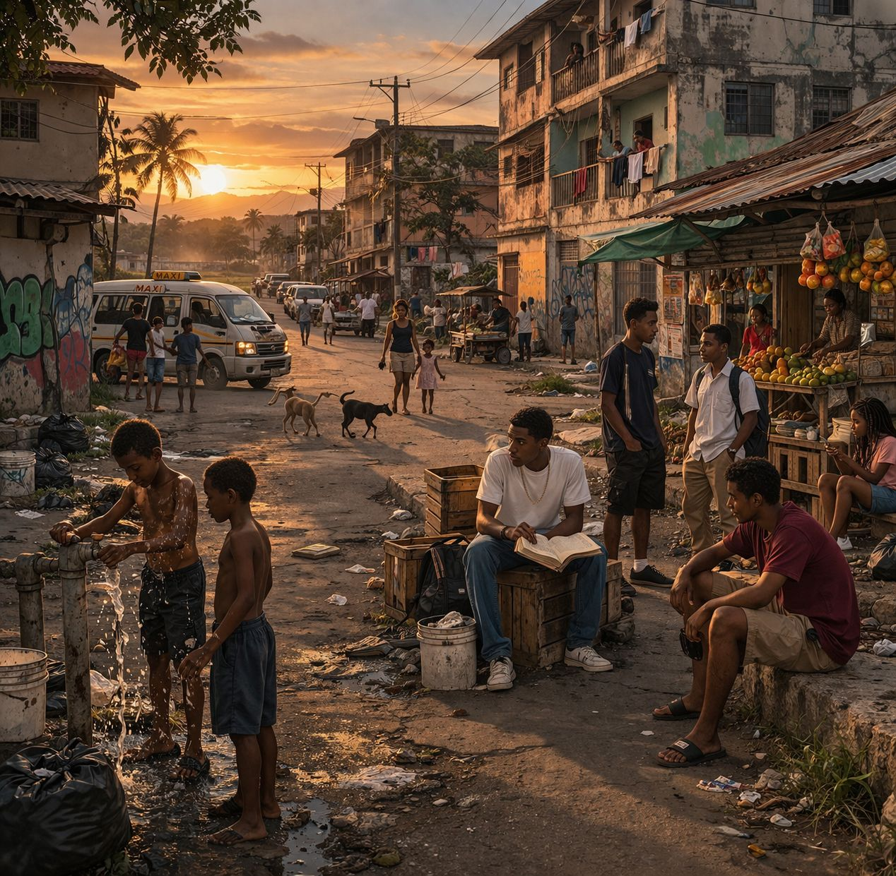
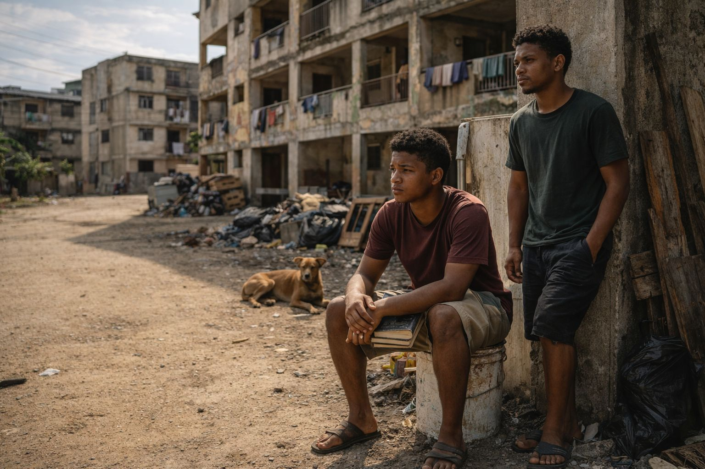
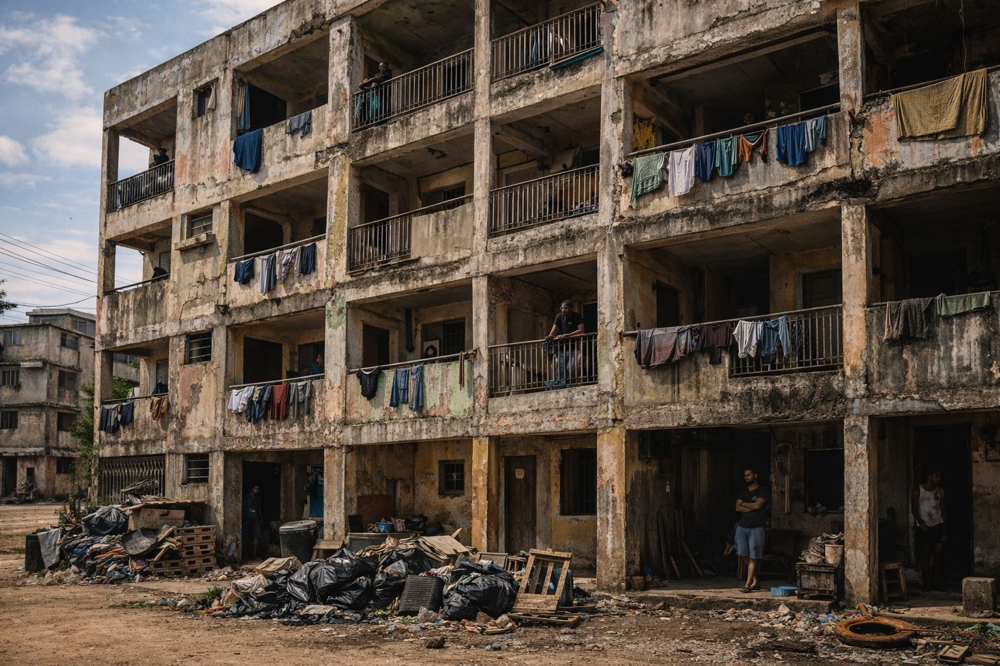
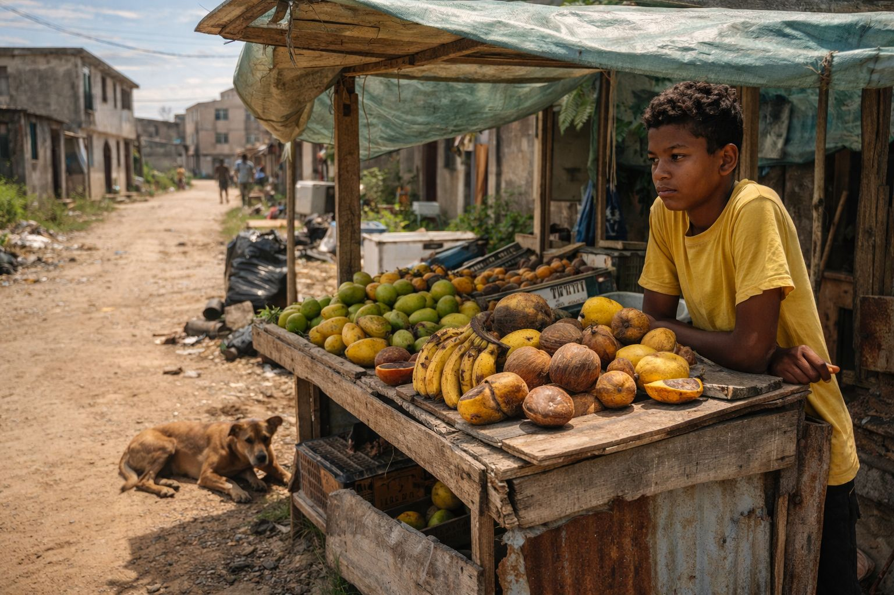
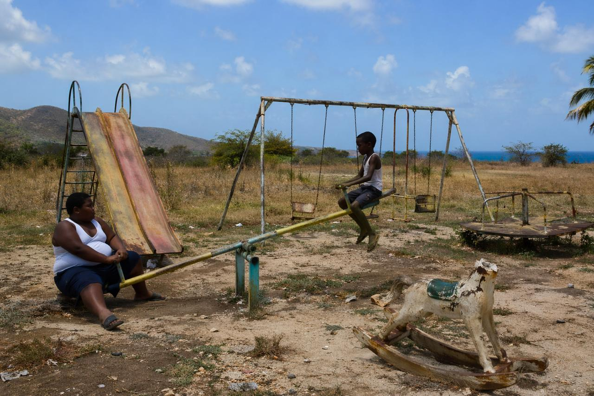

Acts with distinct visual moods
Each act gets its own palette, image treatment, and pacing without losing the continuity of Bug’s journey.

A literary web experience
A cinematic reading experience that keeps the story’s core intact: a boy, a settlement, a grammar of power, and the small, stubborn idea that balance might still be possible.
Inside the settlement
Each act gets its own palette, image treatment, and pacing without losing the continuity of Bug’s journey.
Social statistics available, sitting behind clean, focused prompts to prevent information overload.
The experience is intended to read like a designed digital essay instead of a set of isolated screens.
Editorial direction
This experience leans into three things already present in the material: place, pressure, and perspective. The tone remains serious and grounded, the social context is preserved, and the protagonist’s inner movement from observation to understanding stays at the center.
Story map

Act I
The postcard version of the place gives way to omission, dropout, and the early gravity of following the wrong model.

Act II
Architecture turns into strategy. Neglect becomes infrastructure. Watching becomes labor. Silence becomes policy.

Act III
The King arrives, violence becomes theater, and mercy itself is twisted into another instrument of domination.

Act IV
After trauma comes a quieter reckoning: cleaning, refusal, desistance, and a final lesson in leverage and equilibrium.
Landscape as character
The roads, kiosks, balconies, bins, rust, and abandoned play spaces all do narrative work. The environment is given room to breathe because the story’s power structures are embedded in the physical space.
Act I
A backroad can look like a picture book, until you notice who the picture leave out.
Settlement 4 does shine like one of them primary-school illustrations: dusty road, savannah open wide, little life moving easy in the heat. But inside the frame, sweetness and rot are stitched together with the same thread.
Illustrators never draw the boy planning to spend his teenage years perched on a paint bucket. They do not draw the quiet watching, the waiting, or that early sensation of being young and already half-finished.
Bug does not frame leaving school as stupidity. He frames it as value. “Free education” sounds noble from a distance, but a cash-in-hand logic feels immediate when classrooms feel hollow and adulthood starts pressing too early.
Foster moves with certainty, and certainty has its own pull. When somebody older makes drift look like direction, it becomes easy to mistake proximity to confidence for a plan of your own.
Act II
A housing block becomes a fortress when everybody agrees it is one.
Power does not arrive with a crown; it arrives with enough people willing to move when one man breathes. “Winning” narrows until it means only surviving the week.
No corner is accidental. No body placement is random. The building looks decayed from outside, but inside it is organized by sightlines, blind spots, and fear.
Garbage, loose boards, and overgrowth do not just signal neglect. They create hiding places. Disorder becomes utility.
The police arrive with performance, but everyone knows how the scene ends. Nobody gets paid enough to go digging through rust, garbage, and retaliation. Questions fall. Voices vanish.
Act III
Power doesn’t ask permission. It takes, then teaches you to thank it for what it spared.
Bodie is not just a dog. He is grief made portable, Bailey remembered, tenderness smuggled into a hard place. That makes him vulnerable the moment power needs a lesson.
No drumroll. No warning. Just the atmosphere changing around one man. The kiosk that once felt routine is suddenly reclassified as a stage for punishment.
The King’s speech transforms intimidation into philosophy. He does not merely threaten; he interprets the world, forcing others to live inside his explanation of it.
The act is cruelty, demonstration, and message all at once. Violence becomes public grammar: who may be hurt, who may watch, and what everybody is supposed to learn from it.
What remains most chilling is not only the violence but the ritual after it: the demand that Foster say thank you. The King does not just seize power; he scripts emotional submission.
Act IV
After the storm comes a quieter test: whether the damage will define you, or instruct you.
Bug and Foster are left in a silence that language cannot easily cross. Sometimes the first sign of trauma is not what is said, but what never arrives.
Cleaning becomes more than domestic labor. It becomes a controlled answer to chaos: a way to put hands on a world that has become morally slippery.
Bug’s break is not triumphant, but it is real. He cannot undo what he has seen, yet he can step away from continuing it.
There is no artificial happy ending. Instead, there is understanding: load, effort, fulcrum, equilibrium. Balance is not sameness. It is placement.
Load. Effort. Fulcrum.
Equilibrium. Balance. Advantage.
That final image allows the story to end not with innocence restored, but with perception sharpened. Bug does not escape the settlement by forgetting it. He reads it better.
Visual echoes
Sources & attribution
The King of Settlement 4 by Kevin Jared Hosein remains the narrative foundation. This site preserves the story’s social atmosphere, emotional arc, and key scenes while presenting them in a more immersive digital format.